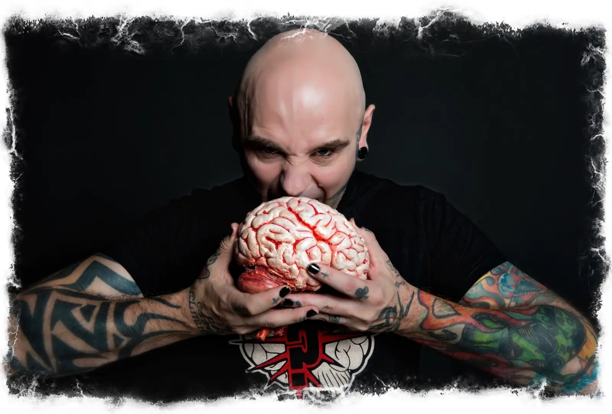
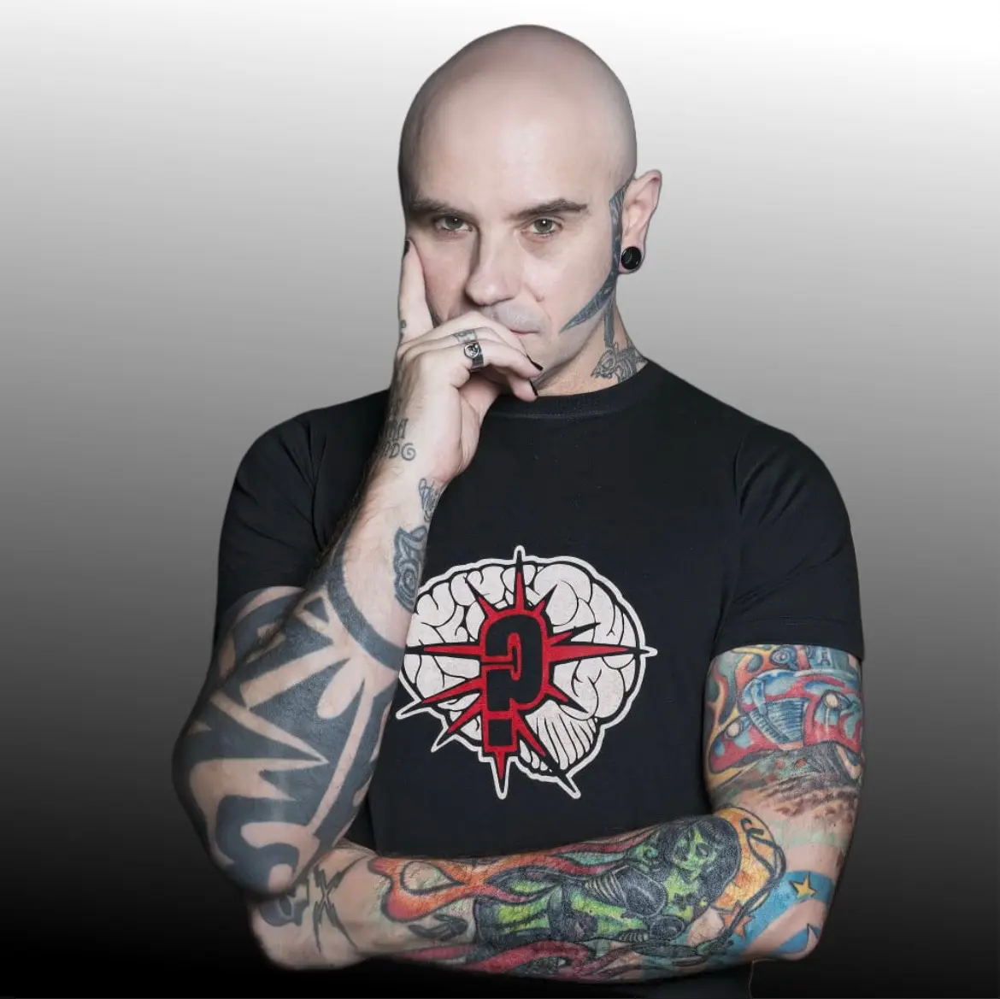
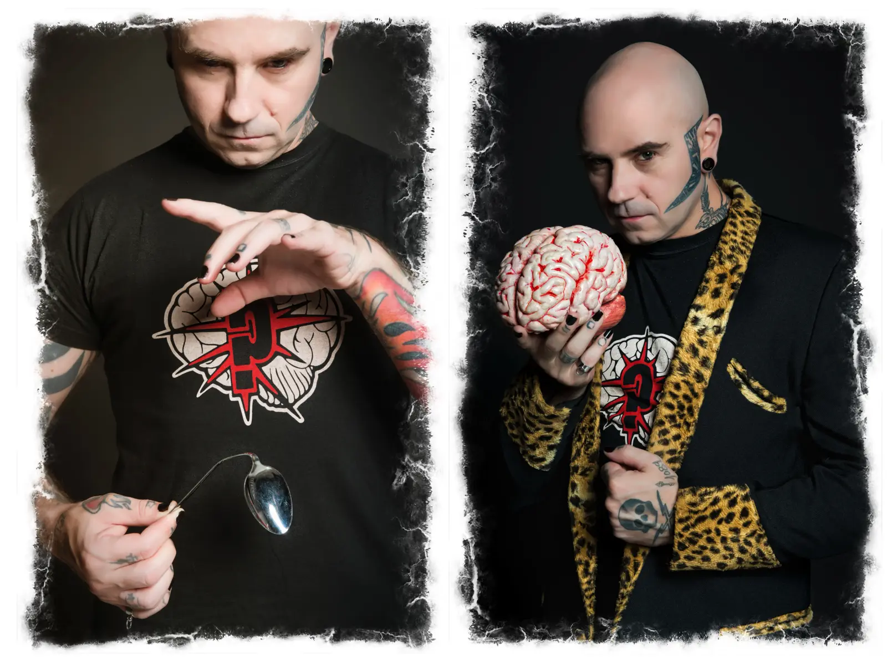
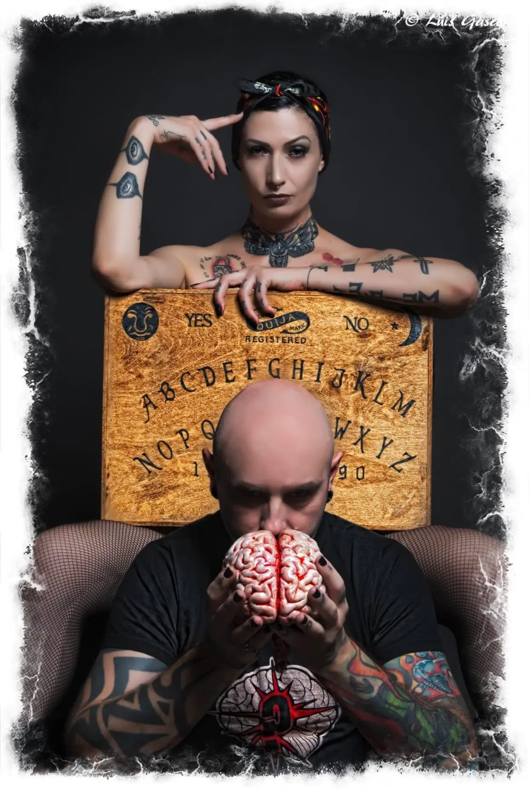
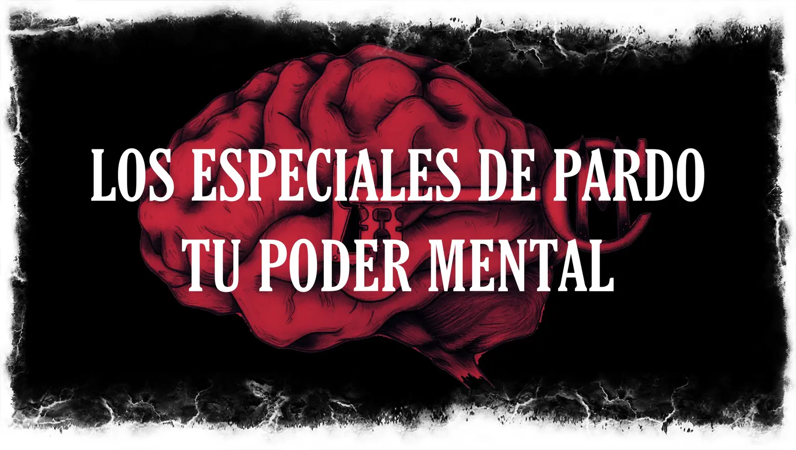
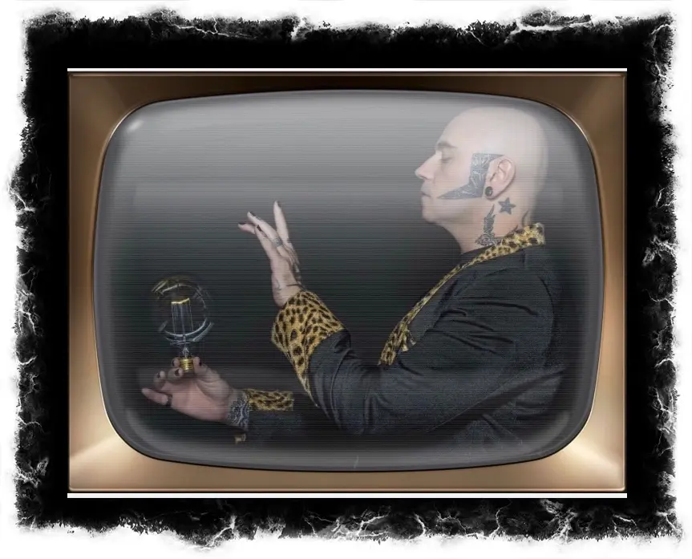

Uno de los 5 mejores mentalistas del mundo
Más de 30 años de carrera dedicados a sorprender, pero sobre todo a hacer sentir: emociones, inquietudes y enigmas del ser humano a través de cada experiencia.

Apasionado de la mente y de todo lo que no tiene explicación
Lo que mueve a Luis Pardo es el funcionamiento de nuestra mente y todo lo relacionado con el misterio, lo oculto y lo paranormal. Decidió investigar si había explicación para todo ello y convertirlo en experiencias únicas.
En 2005 obtuvo el título de Hipnosis Clínica por la AIHCE (Asociación Internacional de Hipnosis Clínica y Experimental). Desde entonces no ha dejado de estudiar el cerebro y la psicología humana, y de aplicar esas técnicas para crear un estilo con sello propio y mucho más impacto en el espectador.
Tres hitos de una carrera
De Mentalismo, en el Congreso Nacional de Magia de Zaragoza (SEI).
Conducción a ciegas en moto: más de 7,5 km con los ojos vendados sobre su Harley-Davidson.
De Mentalismo, en el Congreso Internacional de Magia de Blackpool, Inglaterra (FISM).
A ciegas, por calles abiertas al tráfico
Con un antifaz de acero de 2 mm y una capucha de cuatro capas de tela negra, recorrió la ciudad sin que se cortaran las calles ni se detuviera el tráfico.

Teatro y televisión
Teatro
Cada actuación es un reto: innovar y superarse día a día. Sus espectáculos han sido éxito de taquilla allí donde se han representado, con las mejores críticas del público y de la prensa especializada.
Espectáculos anterioresTelevisión
Su puesta en escena arriesgada y actual ha impulsado la magia y el mentalismo en televisión, logrando siempre los picos más altos de audiencia.
Ver programasPsiqueMagia
La capacidad de hacer sentir y vivir cosas realmente imposibles en la psique de otra persona, para crear verdadera magia.
Para llevarla a cabo creó también su propio espacio: la única sala-museo dedicada exclusivamente al mentalismo de toda Europa, hoy Spirit Club Bcn.


M. Minerva
Artista, amante de las emociones fuertes y apasionada de todo lo misterioso y paranormal. Compañera de Luis Pardo «en la vida y en la muerte».
Debutó junto a Luis en Paranoid y desde entonces es parte esencial de sus creaciones: DeMente, Secretos, Hypnoerotic, Posesión Hipnótica y, hoy, Cuando el Diablo Piensa.
Experta en crear emociones de todo tipo, guía las rutas paranormales de MisterioSants y firma el prólogo de Poemas Prohibidos.
Magia, mentalismo e hipnosis a través de la pantalla
Colaborador en multitud de programas nacionales e internacionales. Sus actuaciones enganchan desde el primer segundo.
El primer programa de magia callejera que se hizo en España.
Colaborador semanal.
Colaborador diario del late night de Santi Millán.
Invitado especial durante tres ediciones.
Profesor del programa.

Los Especiales de Pardo: Tu Poder Mental
Luis Pardo sale a la calle para hacer experiencias de mentalismo e hipnosis con quien se cruza en su camino. Quizá también contigo, a través de la pantalla. Simplemente, déjate llevar.
